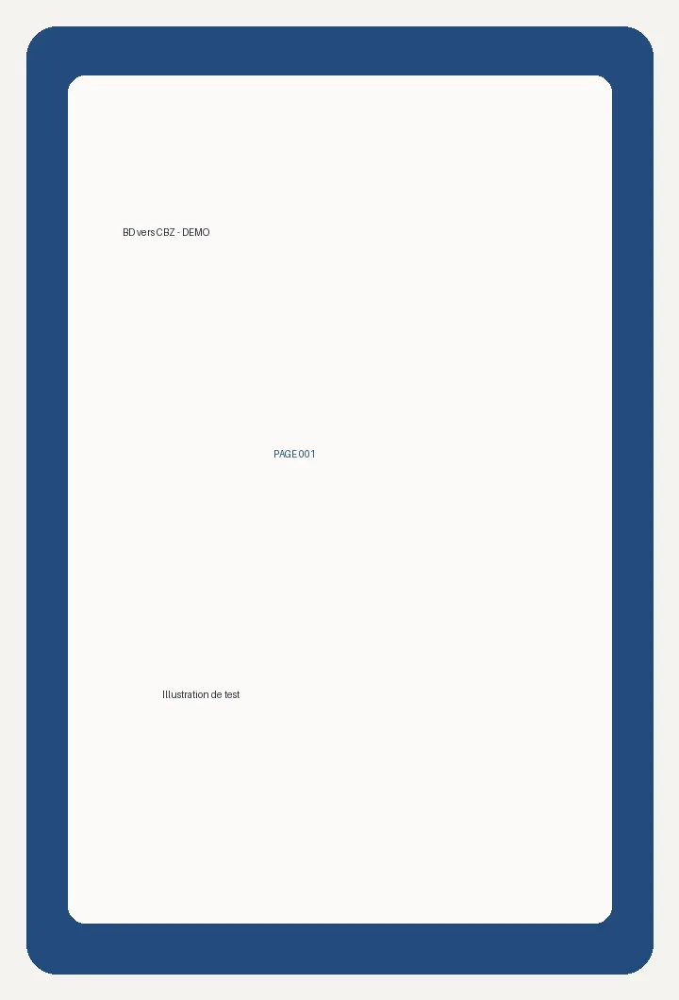

Chapitre 005 — Démonstration
Images libres créées pour tester l'extension. La page 003 est volontairement absente, et la page 002 est ajoutée deux fois.

Chargement de la page 002 au défilement…
Chargement de la page 004 au défilement…
Images libres créées pour tester l'extension. La page 003 est volontairement absente, et la page 002 est ajoutée deux fois.
